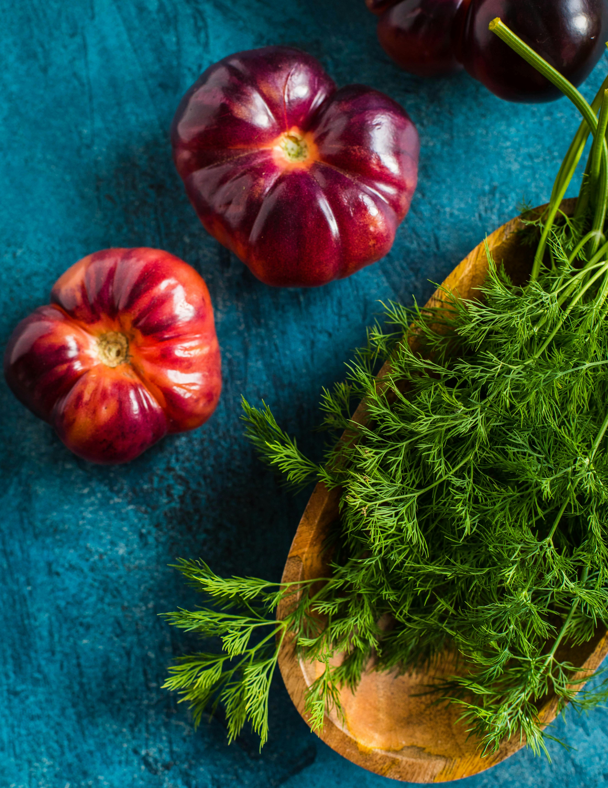
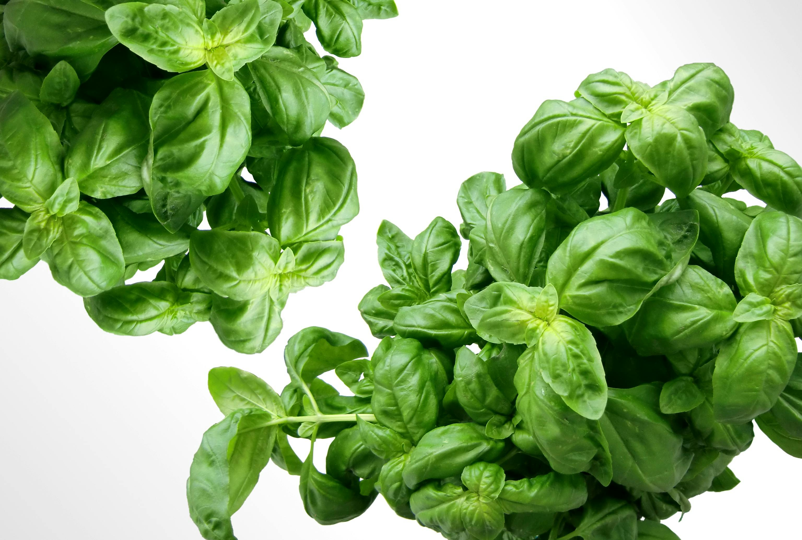

Central California — The person who grew these was located in Central California and, er, hopefully very well-compensated.
Central California — The person who grew these was located in Central California and, er, hopefully very well-compensated.
WHAT WE BELEIVE
We believe in produce. Tasty produce. Produce like:
Apples. Oranges. Limes. Lemons. Guavas. Carrots. Cucumbers. Jicamas. Cauliflowers. Brussels sprouts. Shallots. Japanese eggplants. Asparagus. Artichokes—Jerusalem artichokes, too. Radishes. Broccoli. Baby broccoli. Broccolini. Bok choy. Scallions. Ginger. Cherries. Raspberries. Cilantro. Parsley. Dill.
What are we forgetting?
Oh! Onions. Yams. Avocados. Lettuce. Arugula (to some, “rocket”). Persian cucumbers, in addition to aforementioned “normal” cucumbers. Artichokes. Zucchinis. Pumpkins. Squash (what some cultures call pumpkins). Sweet potatoes and potato-potatoes. Jackfruit. Monk fruit. Fruit of the Loom. Fruits of our labor (this website). Sorrel. Pineapple. Mango. Gooseberries. Blackberries. Tomatoes. Heirloom tomatoes. Beets. Chives. Corn. Endive. Escarole, which, we swear, we’re vendors of organic produce, but if you asked us to describe what escaroles are...